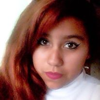

Mi nombre es Nayumi Lizzeth Salas Espinosa, tengo 16 años, vivo en Huauchinango,Puebla soy originaria de aqui mismo. Mis padres son Ruperto Salas Badillo y Fatima Lizzeth Espinosa Castillo, mis hermanos son Ruperto Angel Salas Espinosa y Naomi Lizzeth Salas Espinosa.
 Actualmente, estudio la carrera Tecnico en Programación en el CBTis No.86, soy jugadora de basquetbol, mis mejores amigas son Guadalupe Siboney Vazquez Guzman, suelo llamarla Pelona, y Luz Andrea Morales Telléz, mis mejores amigos son Francisco Alonso Soto Mora, Hugo Escamilla Carrillo y Andres Yakin Urbina Ramirez.
En si en realidad todo esto que menciono aqui, no dice quien soy, porque ni yo se quien soy realmente, mi ideologia es que con el paso de los años, se va descubriendo quien eres en realidad, asi que nunca sabes quien eres...
En mi parecer mis gustos no son muy definidos, en musica me gustan diversidad de generos, pero mi banda favorita es One Direction, aunque a pesar de que me gustan, suelo escuchar a diferentes artistas como Bruno Mars, y algunos mas, no solo me gusta escuchar musica en ingles, tambien suelo escuchar rancheras.
Me gusta escribir historias de ficcion donde las princesas son las que salvan al principe, me gusta hacer cosas que segun la sociedad son para hombres como lo es la cazeria, la construccion de muebles, soldaduras, etc. tambien me gusta leer historias de amor, pero mas que nada en este mundo me gusta jugar basquetbol,me gusta tanto que se ha vuelto parte de mi, al igual que lo es elo cantar, no soy cantante profesional, pero normalmente lo hago cuando estoy haciendo quehacer o alguna otra actividad
Como pasatiempos no hago gran cosa, normalmente veo tv, pero hay ocasiones en las que me pongo a leer o a escribir, pero en si lo que mas hago es cantar, puesto que al cantar es como si todo y todos desaparecieran, es simplemente una sensacion hermosa y unica.
En si no puedo decir mucho, solo esto.